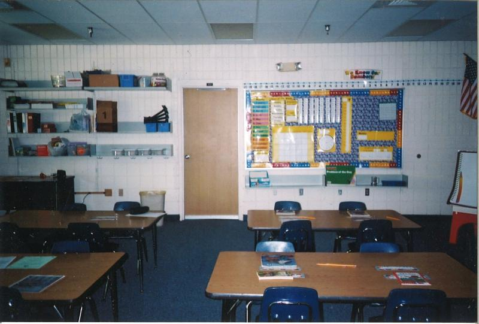
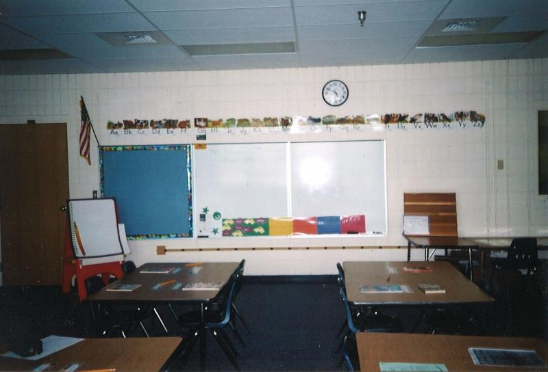

Martin Manley: My Life and Death
Born 8-15-53, Died 8-15-13 , Age 60
- Home Page
- January 1, 2012
- June 11, 2012
- Suicide Preface
- Why Suicide?
- Why not?
- Why Age 60?
- Self-Serving?
- Suicide - How 2
- Gun Control
- Other Suicides
- Other Quotes
- ------------------------------------
- Growing Up
- OMG: I look 60!
- Mom and Dad
- The Heavens
- My Religion
- Chancel Choir
- Victory O Lord
- The Proposal
- Two Marriages
- First Two Loves
- Pictures
- Trips and Travel
- Writing Fiction
- Music & Poetry
- Movies & TV
- Health
- Sleep Deprived
- Living Donor
- Food & Drink
- Creations
- Sports
- KC Star
- KC Tornado
- My IQ
- Synesthesia
- Poker
- Legal
- JOCO, Ks.
- U.S. Financial
- 911 & Conspiracies
- COOL STUFF
- Births & Deaths
911 & Conspiracy theories...
… and a good old fashioned rant!
In 2004, I was in Sarasota, Florida. While there, I stopped by Booker Elementary school. This is where President Bush was when informed that planes had hit the World Trade Center on September 11, 2001. If you don’t remember it, while Bush is sitting in with some elementary kids and their teacher, an aide comes in and whispers in his ear. Bush continued on with the pre-planned event for a few more minutes. You can easily google the video.
The two pictures below show the door (left) through which Bush entered the room and the wall (right) which was the backdrop for the video.


I went by the school to inquire about it, but it was in the summer and nobody was right there to answer any questions. Unlike most schools in the north, all these school rooms have outside entrances. Being summer, they were locked. However, quite a few of the rooms can be accessed from each other. All you have to do is find one room open to the outside and then you can get to any of them. When I got inside, I saw documentation that indicated which room was the room. If you watch the video closely, you can tell it is the room.
The morning of 911, I was watching CNBC. At the time I was heavily involved in investing in the markets and they had just opened. Within minutes, there was a report of a plane hitting the World Trade Center so I switched to CNN. Before long, it was on every channel. I called one of my friends (Joe) who was watching it and we were on the phone together for over two hours – most of the time just dazed.
I consider it the worst day of my life even though I didn’t know anyone personally that was affected. At our church, we drew names of victims to pray for their families. Our family drew Deborah Welsh, age 49 - the same age as I was at the time. She was a flight attendant on the plane that went down in the Pennsylvania field near Shanksville.
I can’t imagine going through another 911 attack. Since I expect things to happen that will dwarf the misery of that day, I’m glad I won’t be around to see them.
And… THE RANT
As you probably know, some nut jobs believe Bush was aware of the attacks well in advance and did nothing to prevent them. Some NJs actually go farther to believe Bush and the government sponsored the attacks.
Of course, there are many conspiracy theories about 911. It never ceases to amaze me how otherwise seemingly rational people can be so IRrational about some things. I don’t know if these conspiracies all began with JFK’s assassination and man’s landing on the moon in the 1960's or if those just happen to be the oldest conspiracies which blossomed in the NJs' internet minds a few decades later. Either way, if we were living in the 1890's, the buzz would be the Civil War never happened, that it was recreated on a sound stage. The whole mindset of these people is bizarre, to say the least.
Conspiracy theorists don’t want to face obvious questions. Somehow, they would rather revel in the excitement of the mystery of what is (or might be) happening in some secret room. Presumably, it confirms their belief that they are smarter, or at least more perceptive, than the masses – when, in actuality, the masses are LTA’sO.
They will tell you that the government brought down the towers as opposed to the planes and that a missile hit the Pentagon rather than a plane. Never mind that every piece of evidence shows that it was one of the hijacked airliners. Never mind that if it had been a missile, the crew and passengers of the missing jet have done the greatest job of hiding out over the past 12 years since Amelia Earhart. A real life Lost series, a never ending X-File.
If you try to explain in rational terms why what they believe cannot be true, their eyes gloss over as though they are being spoken to in another language. These are arguments the NJs will never ask themselves because it causes them to think – and that can be painful when they aren’t used to it.
It reminds me of the old Lost In Space episode where the robot starts asking itself questions. Before long, it gets stuck in a circular line of reasoning and the poor fella ends up frying his brain. “Warning, warning. That does not compute!” I’m afraid that’s what would happen if they allowed a little common sense to seep into their world.
The latest of these are the revelations about the government listening in on phone calls as part of the process of discovering terrorist activity and heading it off before it happens. I’m sure there are millions of people out there that actually wonder who is listening in on the other end of the line or reading their emails or tracking their internet usage. If you are one of them, here is a little statistic for you.
There are, at most, a few thousand people that might be involved in monitoring this information and attempting to make heads or tails out of it with respect to threats against the United States. Considering there are 300 million Americans that are sending emails, text messages, phone conversations, faxes and God knows what all... all day long, it would take…
…listen up… 10 MILLION people monitoring all this data to be able to analyze and evaluate it. That’s over 3,000 times as many people as are involved in the process. It’s IMPOSSIBLE. The odds that anything you or I have ever said or written will be analyzed by these people are miniscule.
I’ve often wondered whether these people check under the bed before they hit the hay? Do they refuse to own a cell phone just in case somebody is sending silent waves through it to give them brain cancer? “You will be assimilated. Resistance is futile.” Sad, very sad.
Copyright 2013 Martin Manley Life and Death. All rights reserved.